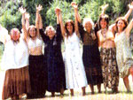
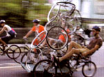
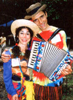
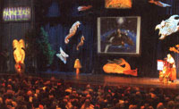

For the best in eco-entertainment and education, check out these green festivals.
S ummer festivals always have been great places to vacation, meet new faces and hear great music. Today, lots of organizations around the country are striving to bring people together in an open-minded and fun atmosphere focused on environmental education. Many include workshops, presentations and forums on renewable energy, sustainability, organic foods and eco-spirituality. Some of the festivals, like the Oregon Country Fair and the Great Hudson River Revival continue their traditions after more than a quarter-century of celebrating.
With the summer months and warmer weather approaching, now is a great time to check out some of the green gatherings. What to bring? Musical instruments, organic and whole foods, and homemade arts and crafts. Children are welcomed and encouraged at many of the gatherings listed. But most importantly, bring a positive attitude and a desire to meet folks from all over the country who are acting locally, but thinking globally, as they party for the planet.
Meriden Antique Engine & Threshers Association Horsepower Days
June 7-8
Meriden, Kansas
(785) 484-3532
Come celebrate the importance of horses on the homestead throughout history and today. The festival features horse-powered farm equipment and old-fashioned games on horseback for the whole family.
The Wild Women's Gathering
June 10-18
Reserve, New Mexico
www.concentric.net/~Earthway/
(505) 533-6776
Women can find a sanctuary to explore their spirituality and connect with Mother Nature in New Mexico's Gila Mountains. This gathering allows women to create bonds with other women and with nature by sharing in workshops, medicine sweats and riverside dancing.
Health and Harmony Festival
June 14-15
Santa Rosa, California
www.harmonyfestival.com
(707) 575-9355
Five hundred vendors and informational booths help celebrate the Harmony Festival's 25th anniversary. Events include an EcoVillage, an international bazaar, a goddess temple, a "Speak-Your-Peace" soapbox and a natural food sampling hall, plus music all day on four stages.
Renewable Energy & Sustainable Living Fair
June 2022
Custer, Wisconsin
www.the-mrea.org
(715) 592-6595
This three-day gathering includes more than 100 workshops and demonstrations about renewable energy and sustainable living, as well as entertainment for families. Celebrate the summer solstice at the world's largest sustainable energy festival, which is partially powered by the renewable energy systems on display.
Great Hudson River Revival
June 21-22
Westchester County, New York
clearwater.org/festival.html
(800) 677-5667
Since 1966, this festival has featured performers from a wide range of contemporary, ethnic and traditional musical styles. Fish puppets, drumming and workshops on sustainable energy, yoga, tai chi and meditation accompany the live music on seven different stages. Proceeds support research and advocacy for the Hudson River.
Colorado Renewable Energy Society Conference
June 27-29
Montrose, Colorado
www.cres-energy.org/conference/index.html
(303) 279-1446
Learn how energy independence and security, renewable energy technology and policy, and alternative transportation can lead to community prosperity. The keynote speaker is Dennis Weaver, founder of The Institute of Ecolonomics, an organization working to create an eco-based economy.
Taos Solar Music Festival
June 27-29
Taos, New Mexico
www.solarmusicfest.com
(505) 758-9191
Located in the solar capital of the world, the Taos Music Festival brings people together to work toward changing our society's wasteful energy consumption. The festival features bands and interactive renewable energy displays.
Bike Summer 2003
June 27-July 26
New York City
www.bikesummer.org/2003
In between two Critical Mass bike rides on June 27 and July 25, this month-long celebration of bicycling includes bike culture and street theater events, art workshops, speakers and camping trips.
Firemaker 2005
July 3-6
Sooke, British Columbia
www.firemaker.org
(250) 743-1995
People of all ages can explore natural and primitive skills, as well as gain an understanding of the underlying philosophy behind these ways of life. Main events feature drumming, wilderness survival, nature art and awareness, and the medicine wheel.
Festival for the Eno
July 4-6
Durham, North Carolina
www.enoriver.org/festival
(919) 477-4549
This environmental education festival features updates on recycling and composting, as well as information about the Eno River's ecology. The Eno River Association's main fundraiser includes three days of music, craft shows and food on the river's banks.
Oregon Country Fair
July 11-13
Veneta, Oregon
www.oregoncountryfair.org
(541)343-4298
Music and entertainment, workshops on renewable energy and booths featuring Oregon history comprise this 34-year-old festival. Environmental education, renewable energy and resource conservation are topics to explore, as well as the festival's public art, meditation area, on-site sauna and 12 stages of music.
SolarFest Renewable Energy Festival
July 12-13
Poultney, Vermont
www.solarfest.org
(802) 235-2866
Enjoy workshops on sustainable energy, off-grid living and environmentally sound transportation. Musicians perform on two stages and tours are available of the renewable energy systems that power the festival.
SolWest Renewable Energy Fair
July 25-27
John Day, Oregon
www.solwest.org
(541)575-3633
The most comprehensive energy fair in the Pacific Northwest includes workshops and exhibits on renewable energy and self-reliant, sustainable living. An Electrathon race features efficient vehicle technology.
Northeast Organic Farming Association (NOFA) Summer Conference
August 8-10
Amherst, Massachusetts
www.nofamass.org
(978) 355-2853
Workshops for adults, children and teens focus on organic farming and homesteading. The conference also features animal husbandry, herbs and flowers, nutrition, sustainable building, home-schooling and organic activism.
Southwest Renewable Energy Fair
August 8-10
Flagstaff, Arizona
www.gfec.org/swref
(928) 526-9317
Following the Southwest Renewable Energy Conference, August 7-8, the fair offers a product expo of renewable energy technology, speakers, a kids' fair, and tours of solar and wind-energy plants.
Illinois Renewable Energy Fair
August 9-10
Oregon, Illinois
www.illinoisrenew.org
(815) 732-7332
Meet experts of renewable energy technology and services, attend workshops on saving energy and build community support for incorporating renewable energy into daily life. Learn about creating a more sustainable home, business, farm or community.
Southern Energy & Environment Expo
August 22-24
Fletcher, North Carolina
www.seeexpo.com
(828) 696-3877
Workshops and presentations feature information on green businesses in the Southeast. The expo includes solar energy, wind power, small-scale hydroelectric systems, alternative building techniques and community activism. Children's activities, entertainment and camping are available.
SolFest 2003
August 23-24
Hopland, California
www.solfest.org
(928) 649-8180
Learn the latest developments in renewable energy systems, such as solar roofing, hydrogen fuel cells and sustainable building materials, while kids participate in art projects. This year's festival will focus on community, with information on sustainable communities, shared-housing developments, and sustainable food and farming.
Twirl Oaks Communities Conference
August 29-September 1
Louisa, Virginia
www.twinoaks.org
(540) 894-5126
Share and learn practical tools for incorporating sustainability and activism into your daily life and community. The three-day camp-out includes workshops by day and a dance party and fire circles by night. Organizers encourage input about the conference's content and planning.
Seattle Tilth Organic Harvest Fair
September 13
Seattle, Washington
www.seattletilth.org
(206) 633-0451
Booths full of organic produce and homemade food, food demonstrations, and entertainment and workshops on organic farming mark this year's Harvest Fair.
Common Ground Country Fair
September 19-21
Unity, Maine
www.mofga.org/fb01.html
(207) 568-4142
Started in 1977, the fair features organic farmers and livestock, natural foods, live music and entertainment, basic gardening skills, folk arts and crafts, and tools for green living.
Prairie Festival
September 26-28
Salina, Kansas
www.landinstitute.org
(785) 823-5376
The festival opens with a barn dance and includes speakers, artists, workshops, music, guided prairie walks, camping, and children's activities focused on sustainability and environmental education.
Texas Renewable Energy Roundup
September 26-28
Fredericksburg, Texas
www.renewableenergyroundup.com
(512)345-5446
More than 75 exhibits and 70 free presentations are available. The festival also includes musical acts, guided tours of organic farms and ranches, workshops on renewable energy and energy saving, and children's activities.
Apple Festival 2003
September 28
Salt Spring Island, British Columbia
www.appleluscious.com
(250) 653-2007
About 150 varieties of organic apples are on display at the Apple Festival. Apple tasting, baking, history and identification complement opportunities to tour 14 orchards.
Green Festival
October 11-12
Austin, Texas and November 8-9
San Francisco, California
www.greenfestivals.com
(415) 255-9319
The festival brings together green entrepreneurs, environmental community organizations and the public in an effort to share information about strengthening local sustain able economies. The event includes a benefit concert on Saturday evening and workshops on community supported agriculture, the Fair Trade movement, renewable energy companies and farmers' markets. A career center with tips on job placement also is available.
Bioneers Conference
October 17-19
San Rafael, California
www.bioneers.org
(877) 246-6337
Join fellow biological pioneers in this three-day event that presents sustainable models of living and a host of environmental resources. The conference includes guest speakers, interactive workshops and nightly entertainment.
For more events, check out MOTHER'S Calendar at http://www.motherearthnews.com . Click on "Community" and then "Event Calendar."
Mother Earth News
|
Courtesy Wild Women's Gathering |
 Courtesy Bikesummer |
 Courtesy Twin Oaks Community |
|
 Courtesy Bioneers |
 |
|